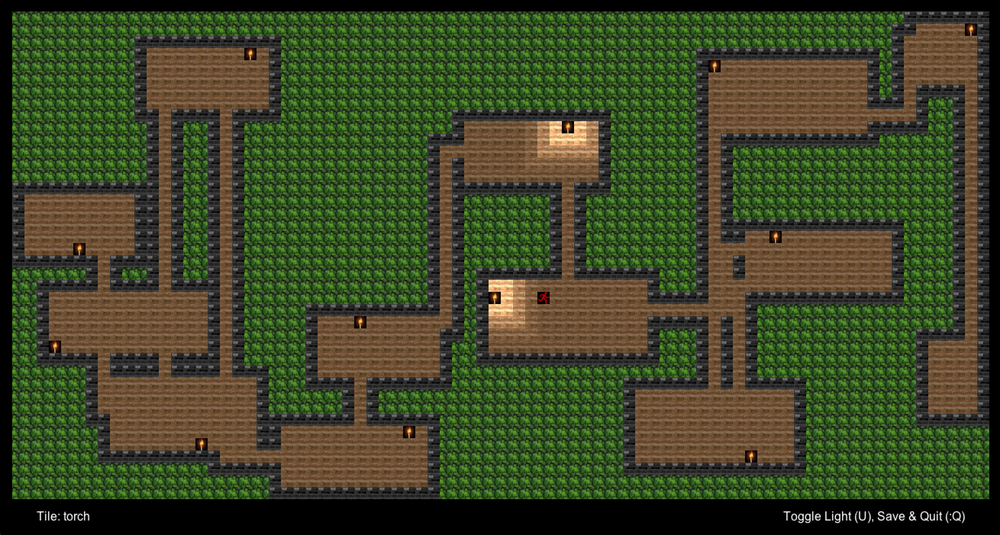
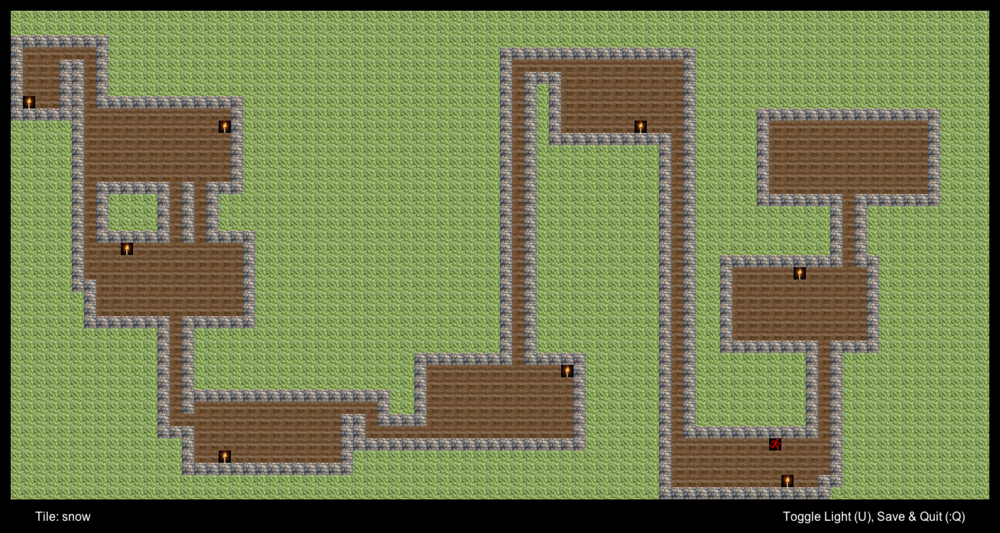
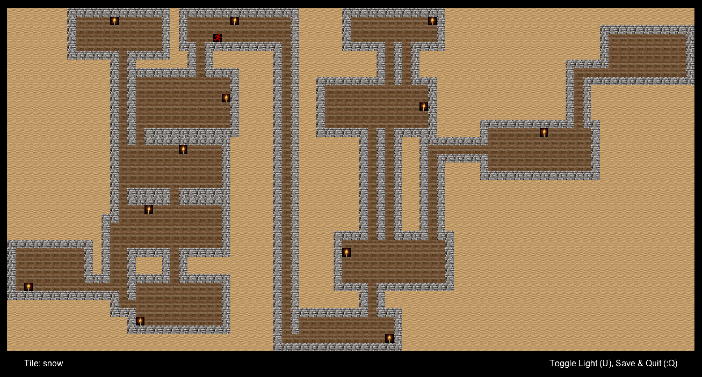

For this project, we used the various data structures taught in CS 61B to implement an engine that randomly generated a world of rooms and hallways based on a given seed. In addition, the world is interactive and supports saving and loading! I added interactive light sources and a few different biomes as extra, personal touches.
So see the code, visit the Github repo!
Created by Yassin Oulad Daoud for CS 61B, Sp 2019.
  